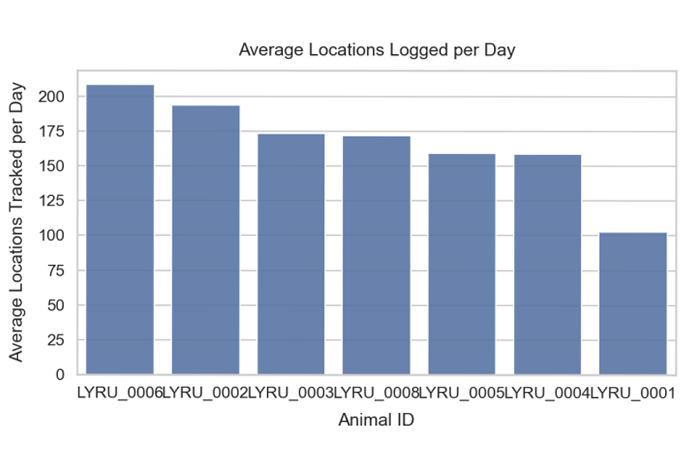
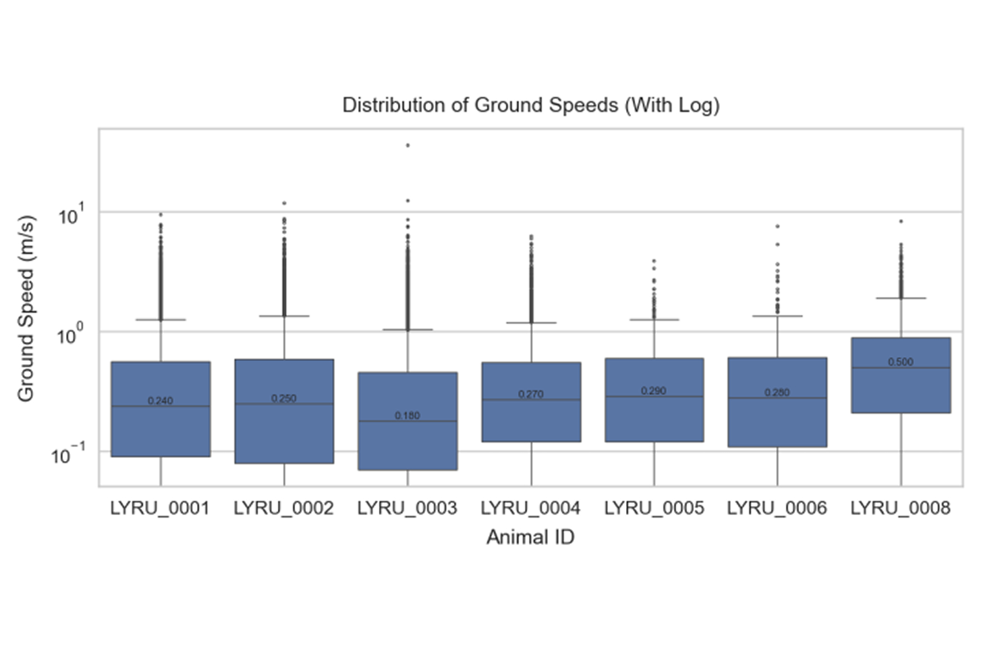
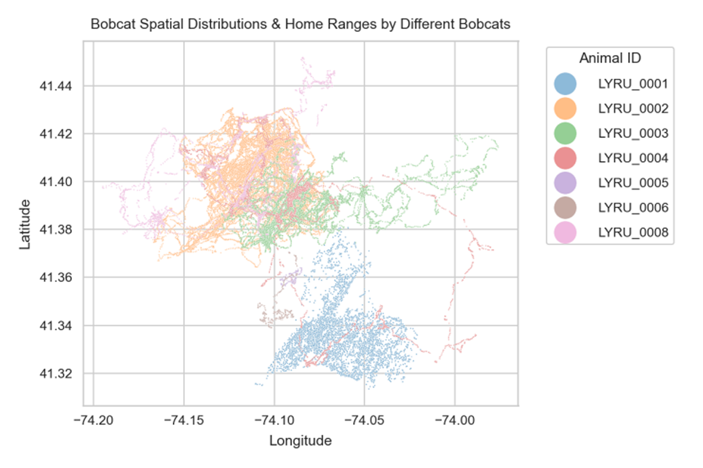
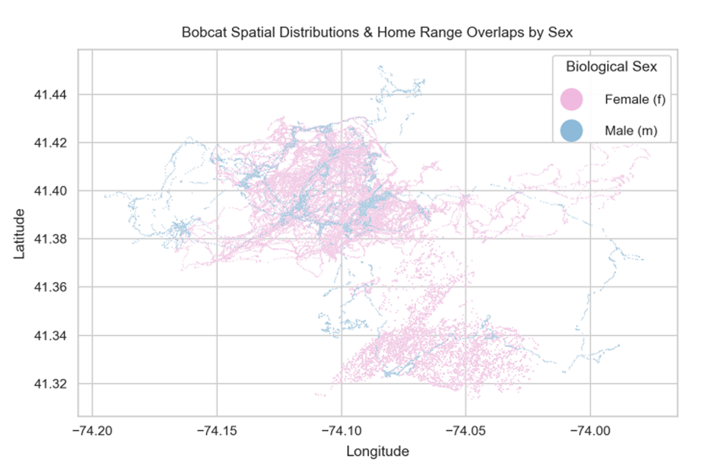
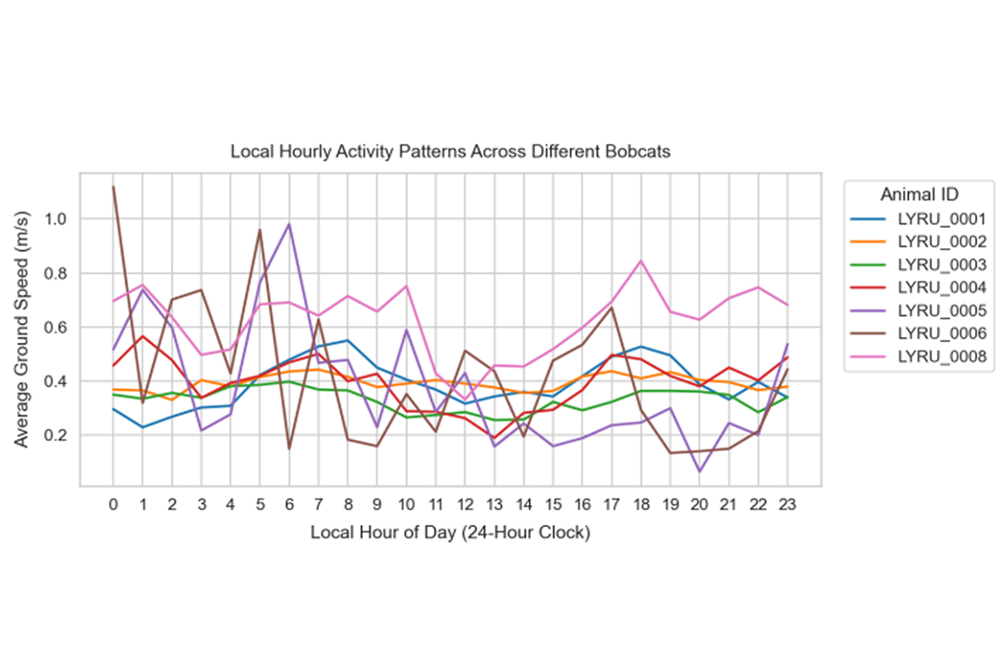
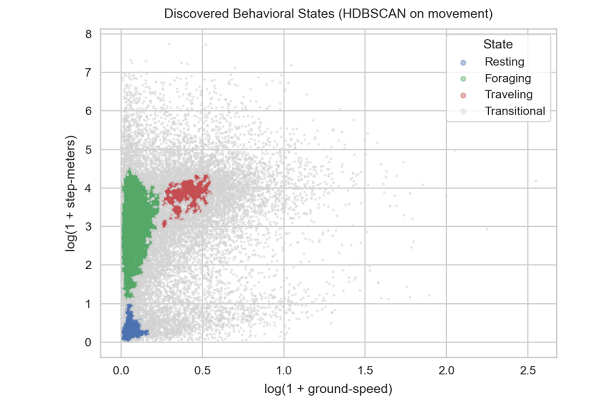
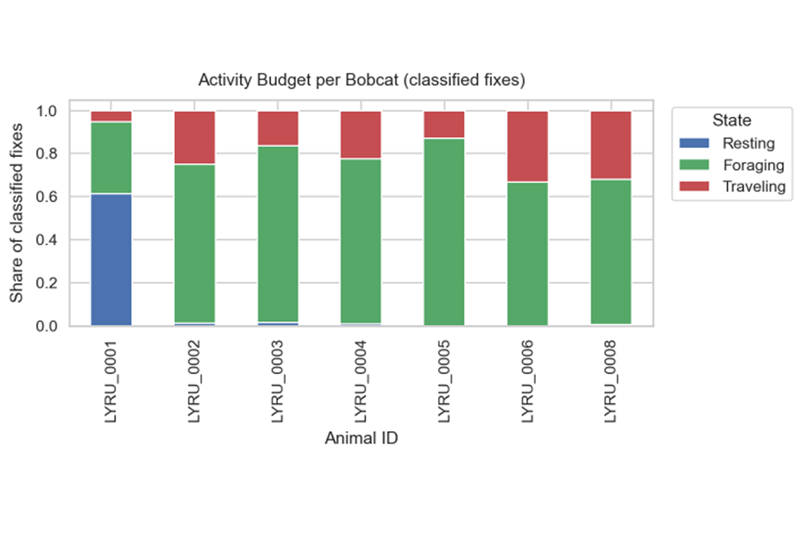

using the Movebank dataset “Carnivore movements near Black Rock Forest New York” · LaPoint (2026)
How do spatial movement patterns, territorial boundaries, and activity levels vary among individual bobcats, and how do biological factors — sex, mass, and life-stage — shape these behaviors near Black Rock Forest, New York?
We investigate the spatial, temporal, and biological drivers of bobcat (Lynx rufus) movement near Black Rock Forest, New York, using high-frequency GPS telemetry and biological metadata collected 2020–2026. We profile individual activity budgets, circadian rhythms, and territories, then apply density-based behavioral clustering (HDBSCAN) and temporal feature engineering to relate biological traits to behavior.
Few males were tracked, and two individuals account for ~96% of all male fixes — sex & life-stage effects may partly reflect which cats were tracked, not the species at large.
Data scope: 131,930 raw merged fixes (49 variables) → 112,232 cleaned Lynx rufus observations · 7 bobcats

| animal-id | sex | mass (g) | life-stage |
|---|---|---|---|
| LYRU_0001 | f | 6300 | adult |
| LYRU_0002 | f | 7200 | subadult |
| LYRU_0003 | f | 5000 | juvenile |
| LYRU_0004 | m | 8000 | juvenile |
| LYRU_0005 | f | 5400 | juvenile |
| LYRU_0006 | f | 6700 | subadult |
| LYRU_0008 | m | 11400 | adult |
Reading it: Males outweigh the females of the same life stage, but body mass does not predict how much data a collar returns — LYRU_0006 logs the most fixes per day (~208) while LYRU_0001, tracked longest at 261 days, logs the fewest (~101). Deployments ran 3–261 days, so this bar chart mostly measures collar battery life and canopy interference; it is a fix-success plot, not an activity plot.

Reading it: Raw speeds were so right-skewed that the boxes collapsed onto zero, so the axis is log-scaled. Every cat keeps the same shape — long stretches near 0 m/s with a tail of sprint outliers — confirming a shared movement ecology. What differs is the typical pace: LYRU_0008 is the most active (median ~0.50 m/s, widest IQR), the juvenile LYRU_0003 the least (~0.18 m/s) yet it owns the single most extreme sprint; the other five sit between 0.24 and 0.29 m/s.


Reading it: The fixes form bounded, structured home ranges — dense linear track webs — rather than one diffuse cloud, and same-sex ranges sit side by side rather than on top of each other (intrasexual exclusion, which limits resource competition). The adult male LYRU_0008 holds the higher latitudes and only briefly dips into female territory, the pattern expected of a solitary carnivore meeting only to mate. Footprints differ by an order of magnitude: LYRU_0005 / LYRU_0006 stay inside ~1 km², while LYRU_0004 / LYRU_0008 cover >11 km N–S and >14 km E–W. The heavy orange / green / blue saturation is the sampling skew, not extra activity.

Reading it: Timing is shared; amplitude is individual. Pooled mean speed is 0.43 m/s across both crepuscular windows (04–08h and 16–19h) against 0.34 m/s at midday — a ~21% dip — and the curves move together (mean pairwise correlation 0.41). LYRU_0001–LYRU_0003 peak at dawn (06–08h) while the adult male LYRU_0008 peaks at dusk (18h) and runs fastest all day. LYRU_0002 is nearly flat (amplitude 0.11 m/s); the jagged LYRU_0005 / LYRU_0006 lines rest on only 362–467 fixes and should not be over-read.
HDBSCAN density clustering (Campello et al., 2015) segments every fix by its kinematics into Resting · Foraging · Traveling, recovering each cat's activity budget — a structure the raw data never labels.

Reading it: Three dense modes survive and about half of all fixes stay transitional (grey) — behaviour grades rather than switches. Ranked by median speed and step length: Resting (near-zero speed, sub-metre steps), Foraging (slow but ~19 m displacements, i.e. localized searching) and Traveling (~46 m directed steps).

Reading it: LYRU_0001 is the outlier — 61% Resting, barely 5% Traveling. Every other cat is Foraging-dominated (67–87%), with LYRU_0006 and LYRU_0008 most mobile (~32% Traveling). The hourly state mix stays flat, so Q4's dawn/dusk peak is a graded rise in speed, not a switch into Traveling.
Ground-speed is strongly right-skewed, so we use non-parametric, rank-based tests that resist outlier sprints.
H₀State is independent of time-of-day period.
H₁State is associated with time-of-day period.
Traveling concentrates in crepuscular hours (04–08h & 16–19h).
H₀Speed distributions are equal for males & females.
H₁Speed distributions differ by sex.
Males move ~50% faster at the median.
H₀Speed is equal across juvenile / subadult / adult.
H₁At least one life-stage differs.
Speed rises with age — competency develops, not fixed from birth.